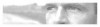

Web 2.0
Ma cosa vuol dire?

In poche parole il termine Web 2.0 descrive l'utilizzo di un gruppo di tecnologie (Ajax, Flex, Java FX e l'ultimo arrivato in ordine di tempo SilverLight) capace di aumentare sensibilmente il grado di interazione tra l'utente ed il sito web. Basti pensare ad applicazioni com GMail o Google Apps che si basano pesantemente su queste tecnolgie ed offrono a tutti gli utenti spazi virtuali di lavoro attraverso l'uso del solo browser web (es. Internet Explorer o Firefox).
Sono molti quelli che replicano affermando che il termine Web 2.0 sia utilizzato per lo più a sproposito e che non ha un vero e proprio significato, ma dal nostro punto di vista riteniamo che citare il Web 2.0 sia un modo diretto per introdurre qualcosa di nuovo che si distacca fortemente dalle tecnologia utilizzate fino a questo momento. Spesso infatti si tende più genericamente a parlare di "Nuovo Web", termine che proprio per la sua vaga natura non rischia di diventare mai obsoleto.
In generale la tendenza è di identificare tramite una definizione univoca atta a distinguere le vecchie tendenze del web primordiale (etichettato come Web 1.0, New economy, ecc....) dalle realtà attuali e future che hanno preso una direzione più delineata. La svolta, se possiamo chiamarla così è avvenuta quando "la maturità del web" in USA è stata battezzata con il termine Web 2.0.
Possiamo riassumere tutti i concetti fin qui affrontati analizzando un piccolo storico dell'evoluzione web :
Web 1.0 : concepito per visualizzare contenuti ipertestuali statici (creati tramite l'utilizzo del semplice linguaggio HTML)
Web 1.5 : introduzione di siti web dinamici, utilizzo di database e di sistemi C.M.S. (Content Management System) portano la grande massa a popolare internet con Blog, Forum, ecc.
Web 2.0 : è in tutto e per tutto simile ai precedenti, in quanto l'infrastruttura alla base di tutto è sempre il protocollo HTTP ed il linguaggio HTML, e quindi ancora l'ipertesto è il concetto di base che relaziona i contenuti. La differenza sta più che altro nell'approccio con cui gli utenti si rivolgono al web che passa dalla semplice consultazione alla possibilità di interagire, di contribuire e condividere alimentando il web stesso con propri contenuti.
Il cosiddetto Web 2.0 ha portato dai siti web personali ai blog, se prima la costruzione di un sito web richiedeva la padronanza di elementi di HTML e programmazione, oggi con i blog chiunque è in grado di pubblicare i propri contenuti, dotandoli anche di veste grafica accattivante, senza possedere alcuna particolare preparazione tecnica. Per questo oggi a farla da padrone sui blog sono scrittori, giornalisti, artisti, o comunque chi ha la necessità di "trasmettere" informazioni, emozioni o avere una visibilità, il tutto con una preparazione informatica non particolarmente elevata.
Il Web 2.0 ha fatto si che si diffondesse, tra le altre cose, uno strumento fondamentale che ha cambiato l'approccio di plubblicare contenuti : il CMS.
Il CMS acronimo di Content Management System (Sistema di Gestione di Contenuti) permette con semplicità e tempestività di "pubblicare" materiale sul web, e soddisfa quel ciclo vitale dell'informazione che va dall'intuizioni alla fruizione dando vita a nuovi sistemi informativi dove il ruolo del fruitore e dell'autore si avvicinano sempre più fino quasi a fondersi (si pensi alla tecnologia Wiki o al microblogging di Twitter).
Il Nuovo Web introduce anche nuovi canali di fruizione dell'informazione, si pensi alle tecnologie di syndication (RSS, Atom,ecc...) che danno vita ai Feed. Tutti i browser ormai permettono di gestire i Feed, grazie all'utilizzo di questa tecnologia possiamo rimanere sempre informati sulle ultime novità di un sito web senza nemmeno doverlo visitare.
Il Web 2.0, o il Nuovo Web che dir si voglia, porta l'utilizzatore ad astrarsi sempre di più dalla rete per come era nata e ad avvicinarsi sempre di più ad utilizzare il web come una applicazione per lavorare, condividere e scambiare contenuti in maniera interattiva ed immediata attraverso l'uso di un semplice browser.
Nel futuro ci aspettano ancora nuovi traguardi tecnologici come il web semantico, il 3d ed i contenuti georeferenziati, concetti che fanno già parte della nuova evoluzione della rete, il Web 3.0.
Alla prossima!
Sono molti quelli che replicano affermando che il termine Web 2.0 sia utilizzato per lo più a sproposito e che non ha un vero e proprio significato, ma dal nostro punto di vista riteniamo che citare il Web 2.0 sia un modo diretto per introdurre qualcosa di nuovo che si distacca fortemente dalle tecnologia utilizzate fino a questo momento. Spesso infatti si tende più genericamente a parlare di "Nuovo Web", termine che proprio per la sua vaga natura non rischia di diventare mai obsoleto.
In generale la tendenza è di identificare tramite una definizione univoca atta a distinguere le vecchie tendenze del web primordiale (etichettato come Web 1.0, New economy, ecc....) dalle realtà attuali e future che hanno preso una direzione più delineata. La svolta, se possiamo chiamarla così è avvenuta quando "la maturità del web" in USA è stata battezzata con il termine Web 2.0.
Possiamo riassumere tutti i concetti fin qui affrontati analizzando un piccolo storico dell'evoluzione web :
Web 1.0 : concepito per visualizzare contenuti ipertestuali statici (creati tramite l'utilizzo del semplice linguaggio HTML)
Web 1.5 : introduzione di siti web dinamici, utilizzo di database e di sistemi C.M.S. (Content Management System) portano la grande massa a popolare internet con Blog, Forum, ecc.
Web 2.0 : è in tutto e per tutto simile ai precedenti, in quanto l'infrastruttura alla base di tutto è sempre il protocollo HTTP ed il linguaggio HTML, e quindi ancora l'ipertesto è il concetto di base che relaziona i contenuti. La differenza sta più che altro nell'approccio con cui gli utenti si rivolgono al web che passa dalla semplice consultazione alla possibilità di interagire, di contribuire e condividere alimentando il web stesso con propri contenuti.
Il cosiddetto Web 2.0 ha portato dai siti web personali ai blog, se prima la costruzione di un sito web richiedeva la padronanza di elementi di HTML e programmazione, oggi con i blog chiunque è in grado di pubblicare i propri contenuti, dotandoli anche di veste grafica accattivante, senza possedere alcuna particolare preparazione tecnica. Per questo oggi a farla da padrone sui blog sono scrittori, giornalisti, artisti, o comunque chi ha la necessità di "trasmettere" informazioni, emozioni o avere una visibilità, il tutto con una preparazione informatica non particolarmente elevata.
Il Web 2.0 ha fatto si che si diffondesse, tra le altre cose, uno strumento fondamentale che ha cambiato l'approccio di plubblicare contenuti : il CMS.
Il CMS acronimo di Content Management System (Sistema di Gestione di Contenuti) permette con semplicità e tempestività di "pubblicare" materiale sul web, e soddisfa quel ciclo vitale dell'informazione che va dall'intuizioni alla fruizione dando vita a nuovi sistemi informativi dove il ruolo del fruitore e dell'autore si avvicinano sempre più fino quasi a fondersi (si pensi alla tecnologia Wiki o al microblogging di Twitter).
Il Nuovo Web introduce anche nuovi canali di fruizione dell'informazione, si pensi alle tecnologie di syndication (RSS, Atom,ecc...) che danno vita ai Feed. Tutti i browser ormai permettono di gestire i Feed, grazie all'utilizzo di questa tecnologia possiamo rimanere sempre informati sulle ultime novità di un sito web senza nemmeno doverlo visitare.
Il Web 2.0, o il Nuovo Web che dir si voglia, porta l'utilizzatore ad astrarsi sempre di più dalla rete per come era nata e ad avvicinarsi sempre di più ad utilizzare il web come una applicazione per lavorare, condividere e scambiare contenuti in maniera interattiva ed immediata attraverso l'uso di un semplice browser.
Nel futuro ci aspettano ancora nuovi traguardi tecnologici come il web semantico, il 3d ed i contenuti georeferenziati, concetti che fanno già parte della nuova evoluzione della rete, il Web 3.0.
Alla prossima!
About the Author
